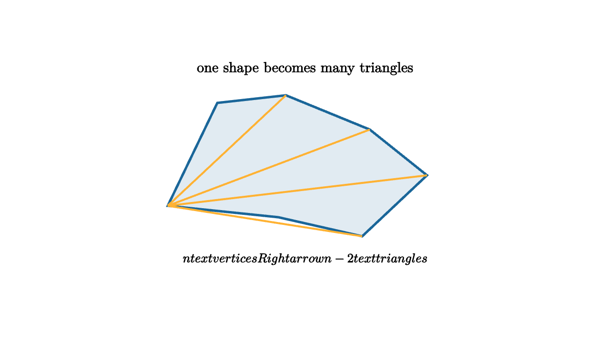

Triangulation Turns Shapes Into Computation
A hand-drawn shape can look smooth and organic. A renderer, collision system, or finite element solver still wants a list of simple pieces. The usual piece is the triangle. Triangles are rigid in the plane, easy to test, easy to shade, and easy to interpolate across. Once a shape is triangulated, many hard questions become repeated versions of a small question.
Given a polygon with $n$ vertices, a triangulation divides its interior into triangles whose vertices are the polygon vertices and whose edges do not cross. For a simple polygon without holes, every triangulation has
triangles. That count is useful, but the bigger idea is structural: the polygon becomes a mesh.

source
let soft = |col, amount| lerp(WHITE, col, amount)
let pts = [1.8l + 0.45d, 1.15l + 0.9u, 0.25l + 1.0u, 0.85r + 0.55u, 1.6r + 0.05d, 0.75r + 0.85d, 0.35l + 0.6d]
mesh diagram = [
fill{soft(BLUE, 0.13)} stroke{BLUE, 3} Polygon(pts),
stroke{ORANGE, 2.4} Line(1.8l + 0.45d, 0.25l + 1.0u),
stroke{ORANGE, 2.4} Line(1.8l + 0.45d, 0.85r + 0.55u),
stroke{ORANGE, 2.4} Line(1.8l + 0.45d, 1.6r + 0.05d),
stroke{ORANGE, 2.4} Line(1.8l + 0.45d, 0.75r + 0.85d),
center{1.35u} Text("one shape becomes many triangles", 0.68),
center{1.15d} Tex("n\\text{ vertices }\\Rightarrow n-2\\text{ triangles}", 0.60)
]Why triangles? A quadrilateral can bend while keeping its side lengths. A triangle cannot. Three points determine a plane in 3D, which makes triangles stable building blocks for surfaces. A triangle also has a clean inside test: a point is inside when it lies on the same side of all three directed edges. That connects triangulation directly to the orientation predicate from the first lesson in this series.
Triangulation also turns a global region into local data. To compute area, add triangle areas. To draw the region, rasterize each triangle. To solve a physical problem over the region, store values at vertices and interpolate across each triangle. Each triangle is a small coordinate system.
source
let soft = |col, amount| lerp(WHITE, col, amount)
let pts = [1.8l + 0.45d, 1.15l + 0.9u, 0.25l + 1.0u, 0.85r + 0.55u, 1.6r + 0.05d, 0.75r + 0.85d, 0.35l + 0.6d]
"Boundary"
mesh shape = [
fill{soft(BLUE, 0.13)} stroke{BLUE, 3} Polygon(pts),
center{1.35u} Text("start with a boundary", 0.70)
]
play Fade(0.7)
"Diagonals"
shape = [
fill{soft(BLUE, 0.13)} stroke{BLUE, 3} Polygon(pts),
stroke{ORANGE, 2.4} Line(1.8l + 0.45d, 0.25l + 1.0u),
stroke{ORANGE, 2.4} Line(1.8l + 0.45d, 0.85r + 0.55u),
stroke{ORANGE, 2.4} Line(1.8l + 0.45d, 1.6r + 0.05d),
stroke{ORANGE, 2.4} Line(1.8l + 0.45d, 0.75r + 0.85d),
center{1.35u} Text("noncrossing diagonals make cells", 0.66)
]
play Trans(1.0)
"Local Work"
shape = [
fill{soft(GREEN, 0.18)} stroke{GREEN, 2.4} Polygon([1.8l + 0.45d, 1.15l + 0.9u, 0.25l + 1.0u]),
fill{soft(ORANGE, 0.18)} stroke{ORANGE, 2.4} Polygon([1.8l + 0.45d, 0.25l + 1.0u, 0.85r + 0.55u]),
fill{soft(BLUE, 0.18)} stroke{BLUE, 2.4} Polygon([1.8l + 0.45d, 0.85r + 0.55u, 1.6r + 0.05d]),
fill{soft(PURPLE, 0.18)} stroke{PURPLE, 2.4} Polygon([1.8l + 0.45d, 1.6r + 0.05d, 0.75r + 0.85d]),
fill{soft(TEAL, 0.18)} stroke{TEAL, 2.4} Polygon([1.8l + 0.45d, 0.75r + 0.85d, 0.35l + 0.6d]),
center{1.35u} Text("area, fill, and shading run triangle by triangle", 0.62)
]
play Trans(1.0)A common algorithmic route is ear clipping. An ear is a triangle made from three consecutive polygon vertices whose diagonal lies inside the polygon and whose triangle contains no other polygon vertex. Clip an ear, record the triangle, and repeat on the smaller polygon. For simple polygons, ears exist until the last triangle remains.
The algorithm is easy to teach because it feels like peeling. Each step removes a safe corner. Orientation tests check convexity. Segment intersection tests keep diagonals from crossing. Point-in-triangle tests keep other vertices out of the ear. The whole method reuses predicates students already know.
In graphics pipelines, triangulation has another practical role. GPUs are optimized around triangles. A complex model arrives as vertices, indices, normals, texture coordinates, and material references. The index buffer says which triples of vertices form triangles. Once the mesh is in that form, rasterization can run the same small process millions of times.
Triangulation is also a modeling decision. Long skinny triangles can be numerically awkward. A mesh with too few triangles misses shape detail. A mesh with too many triangles wastes memory and time. Good geometry code asks for triangles that represent the shape honestly at the scale where the computation will happen.
The hidden graph
A triangulated shape is more than a bag of triangles. It is a graph of adjacency. Each triangle has neighbors across its edges. Each edge has one or two incident faces. Each vertex stores the triangles that meet there. Many algorithms depend on this connectivity.
For example, a pathfinding system can walk from triangle to neighboring triangle across shared edges. A smoothing algorithm can average a vertex with nearby vertices. A physics solver can spread forces through adjacent elements. A renderer can compute vertex normals by averaging the normals of incident faces.
This is why mesh data structures matter. A simple index buffer is compact and fast for drawing. A half-edge or winged-edge structure stores richer adjacency information for editing, remeshing, and topology queries. The triangles are the visible pieces, while connectivity is the memory of how those pieces touch.
Triangle quality
The phrase "a triangulation" hides quality choices. A triangle with angles close to $0^\circ$ and $180^\circ$ is skinny. Skinny triangles can cause numerical problems because interpolation changes rapidly across short distances and slowly along long distances. In simulations, they can make linear systems poorly conditioned. In rendering, they can produce awkward shading or texture distortion.
One famous quality goal is the Delaunay triangulation for point sets. Its informal promise is to avoid skinny triangles as much as the input allows. One way to state the Delaunay condition is that no point lies inside the circumcircle of any triangle. This condition tends to improve minimum angles.
For a polygon, constraints matter too. The triangulation must respect the original boundary edges. For surfaces, triangulation must follow curvature and preserve features. A sharp crease deserves edges along the crease. A smooth flat region can afford larger triangles.
From triangles to algorithms
Once a shape is triangulated, many measurements become sums:
For a scalar quantity sampled over the mesh, an integral can be approximated by adding triangle contributions. For collision detection, a bounding volume can reject large groups of triangles before exact triangle tests. For rasterization, each triangle produces fragments independently.
This repeated local structure is the reason triangulation is so powerful. The programmer writes robust code for one triangle, then lets data decide how many times it runs.
The lesson is simple and powerful: before a computer can reason about a shape, it often turns the shape into many small triangles. The triangle is the alphabet. Meshes are the sentences.